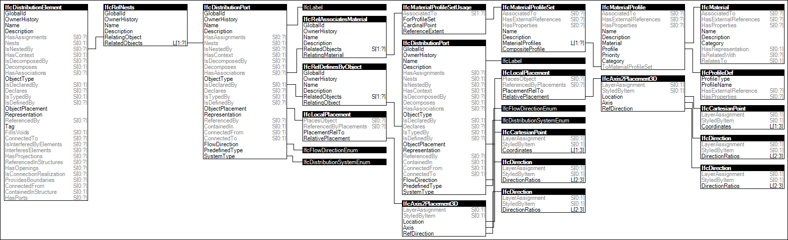

Link to this page
Link to this pagePorts indicate possible connections to other objects according to specified system types, flow direction, and connection properties. Ports are typically connected between devices via cables, pipes, or ducts.
Ports may have placement defined indicating the position and outward orientation of the port relative to the product or product type.
Ports may have material profile sets defined indicating the flow area and connection enclosure.
Figure 67 illustrates an instance diagram.
 |
Figure 67 — Port Nesting |